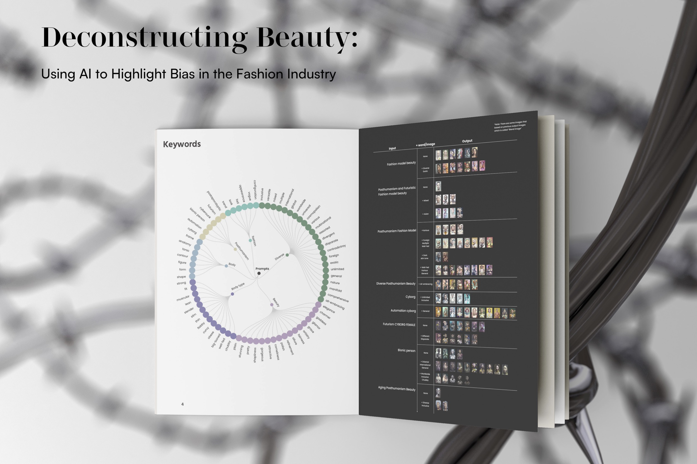

#Bias
#Artificial Intelligence
#Fashion
This project focus on how human bias about body image aesthetics changes over time with a critical analysis of fashion media and the capabilities of some existing generative artificial intelligence (AI) tools. It aims to further shed light on the inherent bias in artificial intelligence systems that manifest in the form of artificially generated body conformity with potential sociocultural implications. To demonstrates how to work with existing, pre-trained artificial intelligence art generator tools to produce results that reflect diverse beauty standards. Examine how the concept of posthumanism can be introduced to the designer’s workflow in the form of text prompts when collaborating with AI generative tools to create inclusive fashion visuals.


I tested the listed keywords from Circular dendrogram, as these are cascade related. However, only some of the keywords produced the desired results. The images were reorganized and rearranged so that viewers can observe and compare the differences between these artworks. Images and prompts are produced after filter layers. In the picture, (Figure. 34) shown here, see some initial input words and phrases such as “fashion magazine mode” and “Posthumanism fashion model beauty,” “Posthumanism Beauty.” By adding related words like diverse, and aging, we get other aspects of beauty. So, discover the images’ color, skin tone, and body shape as the primary focus.
The Midjourney itself exerts stereotypes, and it somehow displays specific “disrespectful” photos without the ability to identify them. But all of this comes from learning from its original initial dataset of thousands of photos. In other words, AI bias is also human bias. The process and result of AI learning from an extensive database of images to produce new art paintings is an innovative form of art creation. The artists can filter image details through input and output. Therefore, humans remain the most crucial factor and the main source of decision-making. With prompt keywords to input, we need to be specific on what, when, and how. The keywords should be as specific as possible to avoid Image bias and stereotypes. Because the AI do not have imagination on create image.

